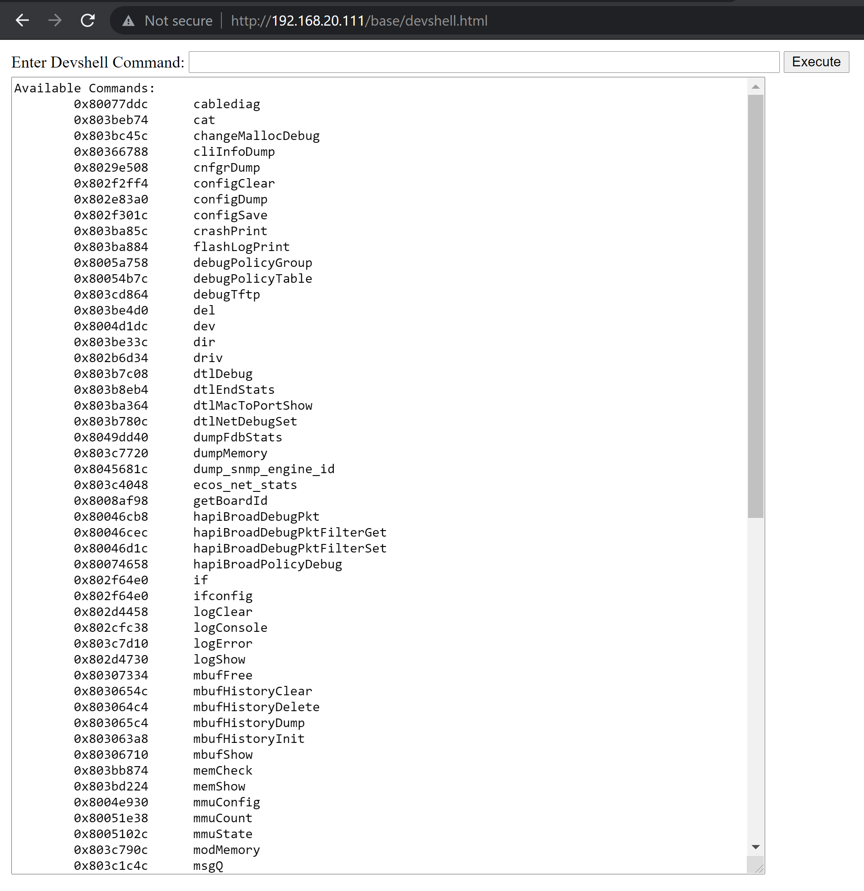

Published: June 7, 2021
This is the first in a series of blog posts that will explore older firmware images to examine different reverse engineering techniques. The first post concerns the Netgear GS110TPv2 and GS108Tv2 which use the same firmware images. This is a 10 port POE switch in the ProSafe family of products.
We will be looking at two versions primarily:
5.4.2.295.4.2.30and then in the end 5.4.2.33 - which is the latest version as of this writing.
From the Release notes, located here
Fixed the issue where the debugging URL of ‘devshell’ is accessible without authentication.
So it looks like there was a debug html page available pre-auth in 5.4.2.29, but certain questions remain:
devshell altogether?devshell behind authentication?Let's take a look at the binary and try to answer these questions by looking at the changes.
Let us run binwalk over the stk files provided in the zip:
$ binwalk GS108Tv2_GS110TP_v5.4.2.29.stk
DECIMAL HEXADECIMAL DESCRIPTION
--------------------------------------------------------------------------------
172 0xAC 7-zip archive data, version 0.2
3779611 0x39AC1B CFE boot loader
4052515 0x3DD623 Copyright string: "Copyright (C) 2000,2001,2002,2003,2004,2005 Broadcom Corporation."
Let's carve out that 7-zip data:
$ dd if=GS108Tv2_GS110TP_v5.4.2.29.stk of=GGS108Tv2_GS110TP_v5.4.2.29.stk.7z bs=172 skip=1
$ 7z x GS108Tv2_GS110TP_v5.4.2.29.stk.7z
Now we should have a file named switchdrvr.bin - this is the raw firmware image:
$ file switchdrvr.bin
switchdrvr.bin: ELF 32-bit MSB executable, MIPS, MIPS32 version 1 (SYSV), statically linked, stripped
The image files are 16MB in size. The firmware images are 32-bit MIPS eCos images. These images include the entirety of the operating system in addition to all application code, so they take quite a while to analyze in Ghidra.
My normal first step would be to run bindiff over the firmware images, but there is currently a bug in BinExport/Ghidra that prevents bindiffing of MIPS binaries (see https://github.com/google/binexport/issues/76 for more info).
Instead, we are going to search for the string devshell in Ghidra.
Looking at the 5.4.2.29 image, we can see the string /base/devshell.html in the strings menu. When I go to that URL path in a browser, this is what I see:

The weird thing is I definitely have to be authenticated with a valid SID cookie in order to load the /base/devshell.html. The POST request that executes a OS command also requires authentication. So what exactly did the manufacturer change?
The string Available Commands is present in the HTTP POST response, so lets look for that in the binary.
In the 5.4.2.29 image I see one occurance of the string Available Commands, and it leads me to the function at address 0x803bdf68.
void FUN_803bdf68(void)
{
int iVar1;
uint uVar2;
uint uVar3;
FUN_80301974("\nAvailable Commands:\n");
uVar2 = 0;
if (DAT_80edcc08 != 0) {
do {
iVar1 = FUN_803c570c((&PTR_s_cablediag_80edc960)[uVar2 * 2],&DAT_80abb9d0);
uVar3 = uVar2 + 1;
if (iVar1 != 1) {
FUN_80301974("\t%p\t%s\n",(&PTR_LAB_80edc964)[uVar2 * 2],
(&PTR_s_cablediag_80edc960)[uVar2 * 2]);
}
uVar2 = uVar3;
} while (uVar3 < DAT_80edcc08);
}
FUN_80301974("\nPlease see the source code for parameter lists.\n\n");
return;
}
Bingo, this is the code responsible for printing out the help output. Lets go up a node in the call graph and see where FUN_803bdf68 is called:
undefined4 FUN_80364c14(char *param_1)
{
code *pcVar1;
int iVar2;
char local_170 [256];
undefined4 local_70;
undefined4 local_6c;
undefined4 local_68;
undefined4 local_64;
undefined4 local_48;
undefined4 local_44;
undefined4 local_40;
undefined4 local_3c;
undefined4 local_38;
undefined4 local_34;
undefined4 local_30;
undefined4 local_2c;
undefined4 local_28;
undefined4 local_24;
undefined4 local_20 [4];
FUN_80364e98(param_1,local_170,&local_70);
if (local_170[0] == '\0') {
if (*param_1 != '\0') {
FUN_80301974("\nParse error.\n");
}
}
else {
pcVar1 = (code *)FUN_803bddc8(local_170);
if (pcVar1 == (code *)0x0) {
iVar2 = FUN_803c570c(param_1,&DAT_80a45d04);
if ((iVar2 == 1) || (iVar2 = FUN_803c570c(param_1,&DAT_80a45d0c), iVar2 == 1)) {
FUN_803bdf68();
}
else {
iVar2 = FUN_803bddc0(local_170,local_20,local_70,local_6c,local_48,local_44,local_40,
local_3c,local_38,local_34,local_30,local_2c,local_28,local_24);
if (iVar2 == 0) {
FUN_80301974("\nvalue = %d = 0x%x\n",local_20[0],local_20[0]);
}
else {
FUN_80301974("Undefined symbol: %s\n",local_170);
FUN_80301974("\n\tType \'help\' for assistance\n\n");
}
}
}
else {
FUN_80301974("\n Executing - %s\n",local_170);
local_20[0] = (*pcVar1)(local_70,local_6c,local_68,local_64,local_40,local_3c,local_38,
local_34,local_30,local_2c,local_28,local_24);
FUN_80301974("\nvalue = %d = 0x%x\n",local_20[0],local_20[0]);
}
}
return 0;
}
This function (located at address 0x80364c14) seems to be the HTTP request handler for the execute command function in the devsehll.
Now lets see if these functions have counter parts in the 5.4.2.30 firmware image.
Searching for the string devshell reveals the same strings in 5.4.2.30 - /base/devshell.html.
Searching for the string Available Commands reveals a string without a reference. Maybe the help command was removed?
However, searching for the string Undefined symbol, which is present in the HTTP resquest handler function in 5.4.2.29 leads us to the corresponding function in 5.4.2.30.
undefined4 FUN_80364f84(char *param_1)
{
code *pcVar1;
int iVar2;
char local_170 [256];
undefined4 local_70;
undefined4 local_6c;
undefined4 local_68;
undefined4 local_64;
undefined4 local_48;
undefined4 local_44;
undefined4 local_40;
undefined4 local_3c;
undefined4 local_38;
undefined4 local_34;
undefined4 local_30;
undefined4 local_2c;
undefined4 local_28;
undefined4 local_24;
undefined4 local_20 [4];
FUN_803651f0(param_1,local_170,&local_70);
if (local_170[0] == '\0') {
if (*param_1 != '\0') {
FUN_80301ce4("\nParse error.\n");
}
}
else {
pcVar1 = (code *)FUN_803be120(local_170);
if (pcVar1 == (code *)0x0) {
iVar2 = FUN_803c599c(param_1,&DAT_80a45fd4);
if ((iVar2 != 1) && (iVar2 = FUN_803c599c(param_1,&DAT_80a45fdc), iVar2 != 1)) {
iVar2 = FUN_803be118(local_170,local_20,local_70,local_6c,local_48,local_44,local_40,
local_3c,local_38,local_34,local_30,local_2c,local_28,local_24);
if (iVar2 == 0) {
FUN_80301ce4("\nvalue = %d = 0x%x\n",local_20[0],local_20[0]);
}
else {
FUN_80301ce4("Undefined symbol: %s\n",local_170);
FUN_80301ce4("\n\tType \'help\' for assistance\n\n");
}
}
}
else {
FUN_80301ce4("\n Executing - %s\n",local_170);
local_20[0] = (*pcVar1)(local_70,local_6c,local_68,local_64,local_40,local_3c,local_38,
local_34,local_30,local_2c,local_28,local_24);
FUN_80301ce4("\nvalue = %d = 0x%x\n",local_20[0],local_20[0]);
}
}
return 0;
}
Looking at the differences, this line is present in 5.4.2.29 but not 5.4.2.30:
FUN_80301974("\n\tType \'help\' for assistance\n\n");
Looks like they did remove the help command. It does not look like they are filtering out any other commands though, so the devshell should still work if you know the commands.
For reference, here they are (output from 5.4.2.29 - the addresses will be different for other versions but you don't need the addresses to execute the commands)!
Available Commands:
0x80077ddc cablediag
0x803beb74 cat
0x803bc45c changeMallocDebug
0x80366788 cliInfoDump
0x8029e508 cnfgrDump
0x802f2ff4 configClear
0x802e83a0 configDump
0x802f301c configSave
0x803ba85c crashPrint
0x803ba884 flashLogPrint
0x8005a758 debugPolicyGroup
0x80054b7c debugPolicyTable
0x803cd864 debugTftp
0x803be4d0 del
0x8004d1dc dev
0x803be33c dir
0x802b6d34 driv
0x803b7c08 dtlDebug
0x803b8eb4 dtlEndStats
0x803ba364 dtlMacToPortShow
0x803b780c dtlNetDebugSet
0x8049dd40 dumpFdbStats
0x803c7720 dumpMemory
0x8045681c dump_snmp_engine_id
0x803c4048 ecos_net_stats
0x8008af98 getBoardId
0x80046cb8 hapiBroadDebugPkt
0x80046cec hapiBroadDebugPktFilterGet
0x80046d1c hapiBroadDebugPktFilterSet
0x80074658 hapiBroadPolicyDebug
0x802f64e0 if
0x802f64e0 ifconfig
0x802d4458 logClear
0x802cfc38 logConsole
0x803c7d10 logError
0x802d4730 logShow
0x80307334 mbufFree
0x8030654c mbufHistoryClear
0x803064c4 mbufHistoryDelete
0x803065c4 mbufHistoryDump
0x803063a8 mbufHistoryInit
0x80306710 mbufShow
0x803bb874 memCheck
0x803bd224 memShow
0x8004e930 mmuConfig
0x80051e38 mmuCount
0x8005102c mmuState
0x803c790c modMemory
0x803c1c4c msgQ
0x803c203c msgQprint
0x803c1cf4 msgQshow
0x802d8bd4 nimDebugDump
0x802d9b9c nimPortDump
0x802e8044 nsdpDebugSet
0x803bc060 osapiDebugMallocDetail
0x803bbf7c osapiDebugMallocDetailEnable
0x803bb5b0 osapiDebugMallocSummary
0x803bbe54 osapiDebugMemoryInfo
0x803bbc24 osapiDebugMemoryStats
0x803c1c4c osapiDebugMsgQueuePrint
0x803bb5b0 osapiMemShow
0x803c1cf4 osapiMsgQueueShow
0x803bb38c osapiRedir
0x803c75e8 osapiTaskShow
0x8004d208 phyDump
0x800be2cc phyget
0x800be6cc physet
0x802eb2a0 poeCfgDump
0x80074658 policy
0x80074138 policyTable
0x8029b808 poolShow
0x80046310 reboot
0x8004e0c0 regDump
0x803c4010 routePrint
0x800498f0 rxShow
0x802f2f28 setdhcp
0x802870dc shadowDump
0x803c7cb4 showCS
0x8023fc2c soc_property_get
0x8043c8a0 ssltDebugLevelSet
0x80300edc sysShow
0x803bd33c taskShow
0x803bca1c upTime
It looks like the only change made was to remove the help command handler function along with the help prompt output when an invalid command is supplied. For example, on version 5.4.2.30 I get the following output when I submit ifconfig:
Now, neither version 5.4.2.29 or 5.4.2.30 is the latest version as of this writing. Version 5.4.2.33 is the latest version. Does this version match version 5.4.2.33 in that
/base/devshell.htmlhelp command handler function removed?help command prompt output when an invalid command is specified?The decompiler output for the devshell handler function for version 5.4.2.33:
undefined4 FUN_80365b0c(char *param_1)
{
code *pcVar1;
int iVar2;
char local_170 [256];
undefined4 local_70;
undefined4 local_6c;
undefined4 local_68;
undefined4 local_64;
undefined4 local_48;
undefined4 local_44;
undefined4 local_40;
undefined4 local_3c;
undefined4 local_38;
undefined4 local_34;
undefined4 local_30;
undefined4 local_2c;
undefined4 local_28;
undefined4 local_24;
undefined4 local_20 [4];
FUN_80365d78(param_1,local_170,&local_70);
if (local_170[0] == '\0') {
if (*param_1 != '\0') {
FUN_8030286c("\nParse error.\n");
}
}
else {
pcVar1 = (code *)FUN_803bf9c8(local_170);
if (pcVar1 == (code *)0x0) {
iVar2 = FUN_803c7244(param_1,&DAT_80a47d7c);
if ((iVar2 != 1) && (iVar2 = FUN_803c7244(param_1,&DAT_80a47d84), iVar2 != 1)) {
iVar2 = FUN_803bf9c0(local_170,local_20,local_70,local_6c,local_48,local_44,local_40,
local_3c,local_38,local_34,local_30,local_2c,local_28,local_24);
if (iVar2 == 0) {
FUN_8030286c("\nvalue = %d = 0x%x\n",local_20[0],local_20[0]);
}
else {
FUN_8030286c("Undefined symbol: %s\n",local_170);
FUN_8030286c("\n\tType \'help\' for assistance\n\n");
}
}
}
else {
FUN_8030286c("\n Executing - %s\n",local_170);
local_20[0] = (*pcVar1)(local_70,local_6c,local_68,local_64,local_40,local_3c,local_38,
local_34,local_30,local_2c,local_28,local_24);
FUN_8030286c("\nvalue = %d = 0x%x\n",local_20[0],local_20[0]);
}
}
return 0;
}
Looks like the help prompt is back! Is the handler function for the help command in this version too? Searching for the string Available Commands again does not return a referenced string, so it looks like the help function handler is not present.
Indeed, when I run help on version 5.4.2.33 I see this no help function output but also no error message indicating an invalid command.
Alas the devshell still works in the latest version:
This exercise would have been much easier with bindiffing capabilities provided by tools like BinExport/BinDiff, but even without those tools it is possible to manually diff the functions if you know what you are looking for. Using strings as guideposts, its possible to navigate the control flow of a program.